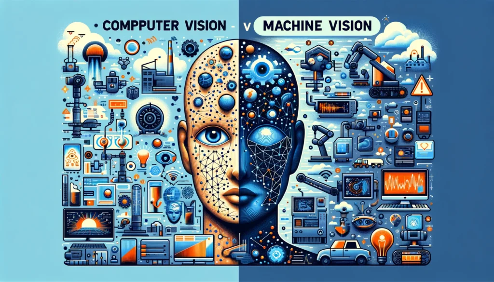
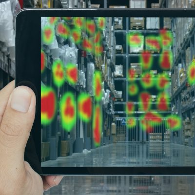

COMPUTER AND MACHINE VISION
A field of artificial intelligence (AI), computer vision is a science that
focuses on training and enabling computers to interpret and understand the
visual world. Computers use digital images from cameras and videos and deep
learning models to identify and classify objects, and use that “knowledge”
to accurately identify and classify objects and react to what they “see”
whether people, things, or other kinds of information.
For more than two decades, Cybernet has been developing and advancing our
work in computer vision capabilities and have produced proven solutions for
automated recognitions of targets, missiles in flight, air/spacecraft outlines,
and physical road features, for example.
In our portfolio of solutions, our systems recognize an ever-growing list of
objects from one or several cameras, with object descriptions input through
commonly used CAD formats like IGES or DXF — spacecrafts, parts, grasp points,
docking targets, or anything that can be defined by a CAD drawing or description.
When presented with workspace views, including objects and other features such as
background clutter, etc., Cybernet's vision systems fixate only on objects that have
been “taught” to the machine. Once the target is matched, based on the computer's
learned “knowledge,” the object's position and orientation is calculated.


×